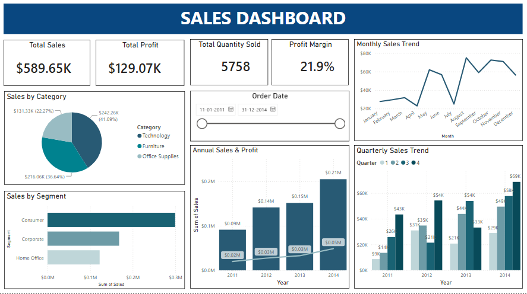

BCom · Data Analytics
Aspiring Data Analyst turning business data into clear, actionable insights with Excel, Power BI, SQL, and Tableau.
Who I Am
I'm Salim Shakir Mannakadavan, a Bachelor of Commerce (Honours) student at Jamia Millia Islamia with a growing passion for data analytics. I believe the best business decisions are the ones backed by data — and I'm building the skills to make that happen.
My commerce foundation gives me a real-world lens for the numbers I work with: whether it's analysing financial trends, interpreting sales data, or building dashboards for management reporting. I don't just crunch numbers — I contextualise them.
Currently deepening my knowledge in Excel, Power BI, SQL, and Tableau, and always on the lookout for hands-on projects and internships that challenge me to apply these tools to real business problems.
Technical Skills
A toolkit built through coursework, self-study, and hands-on practice.
Credentials
Featured Work
A growing collection of Business Intelligence and Data Analytics projects showcasing dashboard design, data transformation, and analytical problem-solving.

Let's Connect
Internships, freelance data projects, or just a conversation about analytics — I'm always happy to connect.